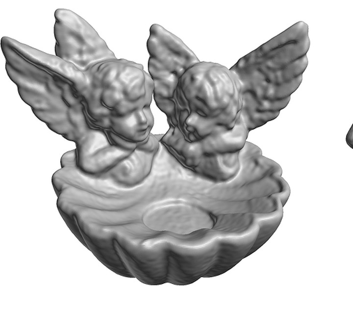
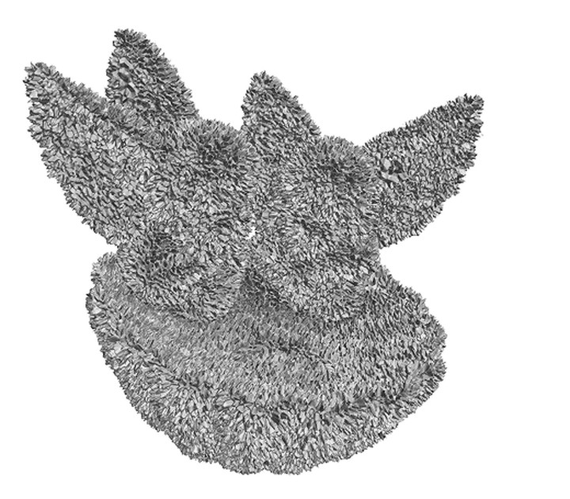
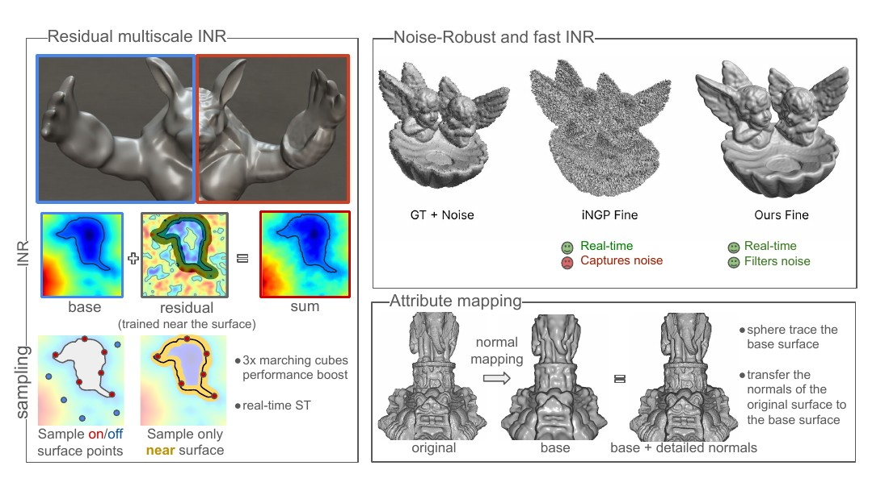
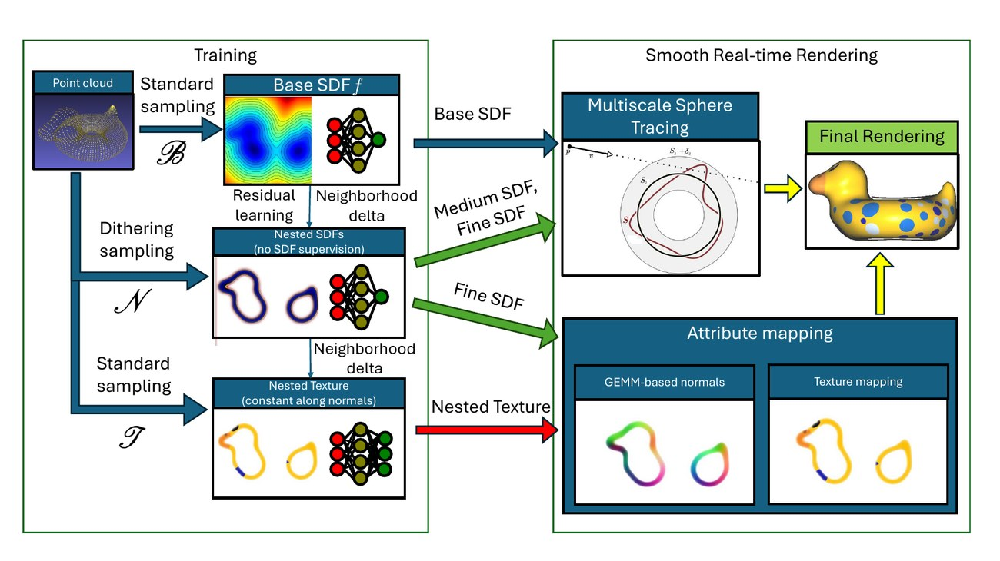
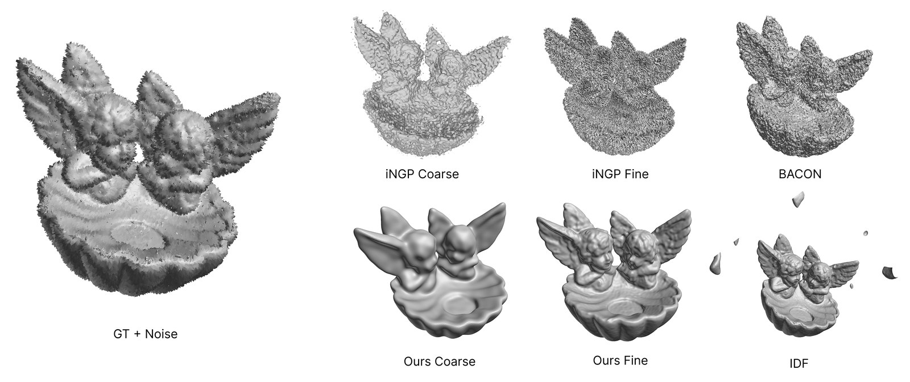
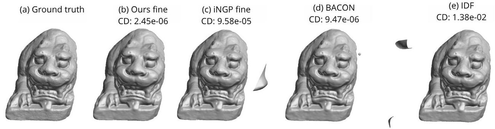

M-plicits models a shape as a base network plus residuals trained only inside nested neighborhoods of the surface. The band-limited coarse level cannot fit high-frequency noise, and the residuals are never supervised where noise lives — robustness is structural, not a loss term. Every partial sum is itself a signed distance function, so coarser prefixes are levels of detail for free.


The nesting is an invariant the renderer can rely on: multiscale sphere tracing cannot miss the surface, marching cubes culled by the coarse band extract up to 5× faster, and GEMM-based analytical normals need no autograd — real-time rendering and attribute mapping from one compact model. Details are in the paper.


@inproceedings{mplicits2026,
title = {M-plicits: Neural Implicit Surfaces via
Nested Multiscale Residuals},
author = {(revealed on acceptance)},
booktitle = {Advances in Neural Information Processing Systems},
year = {2026}
}